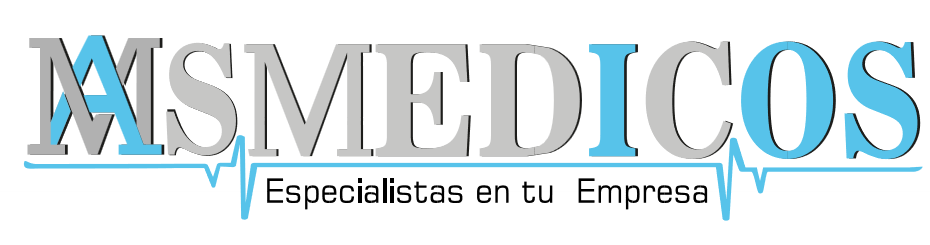

POLÍTICA DE TRATAMIENTO DE DATOS PERSONALES
IPS MASMEDICOS IOS S.A.S.
Contenido
- Capítulo I Disposiciones generales
- Capítulo II Marco jurídico y principios
- Capítulo III Datos personales objeto de tratamiento
- Art. 8. Categorías de Datos Personales Tratados
- Art. 9. Tratamiento de Datos Personales Sensibles
- Art. 10. Tratamiento de Datos Relativos a la Salud
- Art. 11. Historia Clínica y Reserva Legal
- Art. 12. Tratamiento de Datos Personales de Niños, Niñas y Adolescentes
- Art. 13. Tratamiento de Datos Biométricos
- Capítulo IV Derechos de los titulares y deberes del resposable y de los encargados del tratamiento
- Capítulo V Autorización para el tratamiento de datos personales
- Art. 18. Autorización del Titular
- Art. 19. Formas de Obtener y Acreditar la Autorización
- Art. 20. Casos en los que no se Requiere Autorización
- Art. 21. Revocatoria de la Autorización y Supresión de Datos
- Art. 22. Autorización para el Tratamiento de Datos Sensibles y de Datos de Niños, Niñas y Adolescentes
- Capítulo VI Finalidades del tratamiento de datos personales
- Capítulo VII Transferencia, transmisión y circulación de datos personales
- Art. 24. Transferencia Nacional e Internacional de Datos Personales
- Art. 25. Transmisión de Datos Personales
- Art. 26. Transmisión a Proveedores Tecnológicos y Aliados Estratégicos
- Art. 27. Transferencia o Comunicación de Datos por Mandato Legal
- Art. 28. Transferencias Internacionales y Servicios de Computación en la Nube
- Capítulo VIII Seguridad de la información, gestión de incidentes y responsabilidad demostrada (accountability)
- Capítulo IX Procedimiento para el ejercicio de los derechos de los titulares
- Art. 34. Área Responsable de la Atención de Consultas y Reclamos
- Art. 35. Derecho de Consulta
- Art. 36. Derecho de Reclamo
- Art. 37. Rectificación, Actualización y Supresión de Datos Personales
- Art. 38. Revocatoria de la Autorización
- Art. 39. Requisito de Procedibilidad ante la Superintendencia de Industria y Comercio
- Art. 40. Gratuidad del Ejercicio de los Derechos
- Capítulo X Tratamiento de datos en el aplicativo ConMisMédicos
- Capítulo XI Disposiciones finales
CAPÍTULO IDISPOSICIONES GENERALES
Artículo 1. Objeto
La presente Política de Tratamiento de Datos Personales (en adelante, la "Política") tiene por objeto establecer los criterios, lineamientos, principios, procedimientos y medidas adoptadas por IPS MASMEDICOS IOS S.A.S, identificada con NIT 901.154.336-9, para garantizar la protección del derecho fundamental al hábeas data de los titulares de la información, de conformidad con la Constitución Política de Colombia, la Ley 1581 de 2012, el Decreto Único Reglamentario 1074 de 2015, las normas especiales aplicables al sector salud y las demás disposiciones que regulen la materia.
En desarrollo de la presente Política, IPS MASMEDICOS IOS S.A.S establecerá los mecanismos necesarios para asegurar que el tratamiento de los datos personales se realice de manera lícita, leal, transparente, segura y confidencial, garantizando el respeto de los derechos de los titulares y el cumplimiento de los deberes que corresponden al Responsable del Tratamiento.
La presente Política regula todas las operaciones que constituyen tratamiento de datos personales, incluyendo su recolección, almacenamiento, organización, uso, circulación, consulta, actualización, rectificación, transmisión, transferencia, conservación, supresión y cualquier otra operación realizada sobre información personal en desarrollo de las actividades propias de la sociedad.
De manera especial, IPS MASMEDICOS IOS S.A.S adoptará medidas reforzadas para la protección de los datos personales sensibles relacionados con la salud de los pacientes, garantizando la reserva legal de la historia clínica, la confidencialidad de la información asistencial y la implementación de controles técnicos, administrativos y organizacionales acordes con la naturaleza de la información tratada.
Artículo 2. Alcance
La presente Política será aplicable a todos los tratamientos de datos personales realizados por IPS MASMEDICOS IOS S.A.S, independientemente del medio físico o electrónico utilizado para su recolección, almacenamiento, administración, consulta, circulación o conservación.
Las disposiciones aquí contenidas serán de obligatorio cumplimiento para los administradores, representantes legales, directivos, trabajadores, profesionales de la salud, personal asistencial, personal administrativo, contratistas, proveedores, aliados estratégicos, encargados del tratamiento y cualquier persona natural o jurídica que, por razón de una relación legal, contractual o comercial con IPS MASMEDICOS IOS S.A.S, trate datos personales respecto de los cuales la sociedad actúe como Responsable del Tratamiento.
La presente Política será igualmente aplicable a todas las bases de datos, archivos, sistemas de información, plataformas tecnológicas, historias clínicas, historias clínicas electrónicas, registros administrativos, financieros, comerciales, laborales y demás repositorios de información administrados por IPS MASMEDICOS IOS S.A.S, sin perjuicio de la aplicación de las normas especiales que regulan la historia clínica y la información sometida a reserva legal.
Artículo 3. Ámbito de Aplicación
La presente Política regula el tratamiento de los datos personales correspondientes a las personas naturales que mantengan o hayan mantenido cualquier tipo de relación con IPS MASMEDICOS IOS S.A.S, incluyendo, entre otros:
a. Pacientes.
b. Usuarios de los servicios de salud.
c. Usuarios de servicios de telemedicina.
d. Acudientes.
e. Representantes legales.
f. Familiares autorizados.
g. Trabajadores.
h. Aspirantes a procesos de selección.
i. Practicantes y aprendices.
j. Contratistas.
k. Médicos.
l. Especialistas.
m. Personal asistencial.
n. Proveedores.
o. Clientes institucionales.
p. Entidades Promotoras de Salud (EPS).
q. Administradoras de Riesgos Laborales (ARL).
r. Compañías aseguradoras.
s. Entidades públicas y autoridades competentes.
t. Visitantes.
u. Usuarios del sitio web institucional y de las plataformas digitales.
v. Cualquier otra persona natural cuyos datos personales sean objeto de tratamiento por parte de IPS MASMEDICOS IOS S.A.S, de conformidad con la ley.
El tratamiento comprenderá los datos recolectados mediante atención presencial, plataformas tecnológicas, aplicaciones, portales web, correo electrónico, líneas telefónicas, servicios de telemedicina, formularios físicos o electrónicos, sistemas de videovigilancia, contratos, registros clínicos, sistemas administrativos y cualquier otro canal autorizado por la institución.
Artículo 4. Identificación del Responsable del Tratamiento
Para todos los efectos previstos en la presente Política y en la legislación colombiana sobre protección de datos personales, el Responsable del Tratamiento es:
Razón social: IPS MASMEDICOS IOS S.A.S.
NIT: 901.154.336-9
Domicilio principal: Medellín, Antioquia.
Dirección: Carrera 64 A No. 78-581.
Correo electrónico para la atención de asuntos relacionados con protección de datos personales: gerenciamasmedicos@masmedellin.com
Teléfono de contacto: +57 301 251 9764
IPS MASMEDICOS IOS S.A.S actuará como Responsable del Tratamiento respecto de las bases de datos personales que administre directamente o a través de terceros que actúen como Encargados del Tratamiento, adoptando las medidas jurídicas, técnicas, administrativas y organizacionales necesarias para garantizar la protección de la información y el cumplimiento del régimen colombiano de protección de datos personales.
La sociedad podrá designar un área, dependencia o responsable interno para la atención de consultas, reclamos y demás solicitudes relacionadas con el ejercicio del derecho de hábeas data, sin que ello implique la transferencia de las obligaciones legales que le corresponden como Responsable del Tratamiento.
CAPÍTULO IIMARCO JURÍDICO Y PRINCIPIOS
Artículo 5. Marco Jurídico
La presente Política de Tratamiento de Datos Personales se adopta en cumplimiento del régimen colombiano de protección de datos personales y de la normativa especial aplicable al sector salud, constituyendo el marco interno que orienta el tratamiento de la información personal por parte de IPS MASMEDICOS IOS S.A.S.
La interpretación y aplicación de esta Política se realizará de manera armónica con las disposiciones constitucionales, legales y reglamentarias vigentes, especialmente las siguientes:
a. Constitución Política de Colombia, en particular los artículos 15, 20, 48, 49 y 74.
b. Ley 23 de 1981, por la cual se dictan normas en materia de ética médica.
c. Ley 100 de 1993 y las normas que regulan el Sistema General de Seguridad Social en Salud.
d. Ley 527 de 1999, sobre mensajes de datos, comercio electrónico y firmas digitales.
e. Ley 594 de 2000 - Ley General de Archivos.
f. Ley 1266 de 2008, cuando resulte aplicable.
g. Ley 1438 de 2011 y las demás disposiciones que regulan la prestación de los servicios de salud.
h. Ley 1581 de 2012, por la cual se dictan disposiciones generales para la protección de datos personales.
i. Decreto Único Reglamentario 1074 de 2015 y las normas que lo modifiquen, adicionen o sustituyan.
j. Decreto Único Reglamentario 780 de 2016 del Sector Salud y Protección Social.
k. Resolución 1995 de 1999 y las demás normas que regulan la historia clínica y su reserva legal.
l. Ley 2015 de 2020, por medio de la cual se crea la Historia Clínica Electrónica Interoperable.
m. Circular Única de la Superintendencia de Industria y Comercio, en lo relacionado con la protección de datos personales.
n. La jurisprudencia de la Corte Constitucional, del Consejo de Estado y los lineamientos expedidos por la Superintendencia de Industria y Comercio sobre el derecho fundamental de hábeas data.
o. La Health Insurance Portability and Accountability Act (HIPAA) de los Estados Unidos de América, en lo relativo a la protección de datos de salud (PHI), cuando existan operaciones o tratamiento de información en dicho territorio.
p. Las políticas y lineamientos de Google Play para el tratamiento de datos de usuarios y el uso de permisos sensibles, respecto del aplicativo ConMisMédicos.
q. Las demás normas nacionales e internacionales que resulten aplicables al tratamiento de datos personales y a la prestación de servicios de salud.
La modificación, derogatoria o sustitución de cualquiera de las normas anteriormente citadas se entenderá incorporada a la presente Política desde la entrada en vigor de la nueva disposición, sin perjuicio de la actualización formal del presente documento cuando resulte necesaria.
Artículo 6. Definiciones
Para efectos de la presente Política, además de las definiciones previstas en la Ley 1581 de 2012 y el Decreto 1074 de 2015, se adoptan las siguientes:
Autorización: Consentimiento previo, expreso e informado otorgado por el titular para llevar a cabo el tratamiento de sus datos personales.
Aviso de Privacidad: Comunicación verbal o escrita mediante la cual IPS MASMEDICOS IOS S.A.S informa al titular la existencia de la presente Política, las finalidades del tratamiento y la forma de ejercer sus derechos.
Base de datos: Conjunto organizado de datos personales objeto de tratamiento.
Dato personal: Cualquier información vinculada o que pueda asociarse a una persona natural determinada o determinable.
Dato público: Dato calificado como tal por la Constitución Política o la ley, o aquel que no sea semiprivado, privado o sensible.
Dato semiprivado: Dato que no tiene naturaleza íntima, reservada ni pública y cuyo conocimiento puede interesar a determinado sector o grupo de personas.
Dato privado: Información que por su naturaleza íntima o reservada sólo es relevante para su titular.
Dato sensible: Información que afecta la intimidad del titular o cuyo uso indebido puede generar discriminación, incluyendo, entre otros, los datos relativos al estado de salud, datos biométricos, origen racial o étnico, orientación política, convicciones religiosas o filosóficas, pertenencia a organizaciones sindicales o sociales, datos genéticos y datos relativos a la vida sexual.
Datos relativos a la salud: Toda información concerniente al estado físico, mental, psicológico o social de una persona, incluyendo antecedentes médicos, diagnósticos, tratamientos, incapacidades, exámenes, procedimientos, medicamentos, resultados clínicos y cualquier otra información relacionada con la atención en salud.
Dato de salud / PHI (HIPAA): Información de Salud Protegida (Protected Health Information), entendida como toda información relacionada con el estado de salud de una persona generada en un servicio de atención médica, en los términos de la normativa estadounidense HIPAA.
Encargado del Tratamiento: Persona natural o jurídica, pública o privada, que realiza el tratamiento de datos personales por cuenta del Responsable del Tratamiento.
Historia clínica: Documento privado, obligatorio, sometido a reserva legal, en el que se registra cronológicamente el estado de salud del paciente, los actos médicos y demás procedimientos ejecutados por el equipo de salud.
Historia Clínica Electrónica: Registro electrónico de la información clínica del paciente administrado conforme a los principios de autenticidad, integridad, disponibilidad, interoperabilidad, confidencialidad y seguridad.
Responsable del Tratamiento: Persona natural o jurídica que decide sobre la base de datos y/o el tratamiento de los datos personales.
Titular: Persona natural cuyos datos personales son objeto de tratamiento.
Transferencia: Envío de datos personales a un tercero que actúa como Responsable del Tratamiento.
Transmisión: Comunicación de datos personales a un tercero que actúa como Encargado del Tratamiento por cuenta del Responsable.
Tratamiento: Cualquier operación o conjunto de operaciones realizadas sobre datos personales, tales como recolección, almacenamiento, uso, circulación, consulta, actualización, conservación, transmisión, transferencia, bloqueo, supresión o destrucción.
Telemedicina: Modalidad de prestación de servicios de salud soportada mediante tecnologías de la información y las comunicaciones, conforme a la regulación vigente.
Violación de datos personales: Incidente de seguridad que ocasione la destrucción, pérdida, alteración, divulgación no autorizada o acceso indebido a datos personales tratados por IPS MASMEDICOS IOS S.A.S.
Artículo 7. Principios Rectores del Tratamiento de Datos Personales
IPS MASMEDICOS IOS S.A.S desarrollará todas las actividades relacionadas con el tratamiento de datos personales observando los principios establecidos en la Constitución Política, la Ley 1581 de 2012, el Decreto 1074 de 2015 y la normativa especial aplicable al sector salud.
En consecuencia, el tratamiento de datos personales se sujetará a los siguientes principios:
a. Legalidad: El tratamiento de datos personales constituye una actividad reglada que deberá sujetarse a las disposiciones constitucionales, legales y reglamentarias aplicables.
b. Finalidad: El tratamiento obedecerá a finalidades legítimas, específicas, explícitas e informadas al titular.
c. Libertad: El tratamiento sólo podrá realizarse con el consentimiento previo, expreso e informado del titular o cuando exista autorización legal para ello.
d. Veracidad o calidad: La información objeto de tratamiento deberá ser veraz, completa, exacta, actualizada, comprobable y comprensible.
e. Transparencia: Se garantizará al titular el derecho de obtener información sobre la existencia de datos personales que le conciernan y el tratamiento realizado sobre los mismos.
f. Acceso y circulación restringida: Los datos personales sólo podrán ser tratados por las personas autorizadas y durante el tiempo estrictamente necesario para el cumplimiento de las finalidades del tratamiento.
g. Seguridad: IPS MASMEDICOS IOS S.A.S implementará medidas técnicas, humanas, administrativas, físicas y organizacionales orientadas a proteger los datos personales frente a riesgos de pérdida, alteración, acceso, uso o divulgación no autorizada.
h. Confidencialidad: Todas las personas que intervengan en el tratamiento de datos personales estarán obligadas a garantizar la reserva de la información, incluso después de finalizada su relación con la IPS.
i. Responsabilidad demostrada (Accountability): IPS MASMEDICOS IOS S.A.S adoptará políticas, procedimientos, controles, registros y mecanismos de seguimiento que permitan demostrar el cumplimiento efectivo del régimen de protección de datos personales.
j. Privacidad desde el diseño y por defecto: La protección de los datos personales será incorporada desde la concepción, diseño, implementación y operación de los procesos, servicios y tecnologías utilizadas por la IPS, garantizando que, por defecto, únicamente se traten los datos estrictamente necesarios para cada finalidad.
k. Necesidad y proporcionalidad: Únicamente serán recolectados y tratados los datos personales que resulten adecuados, pertinentes y estrictamente necesarios para el cumplimiento de las finalidades informadas al titular y de las obligaciones legales de la IPS.
l. Reserva de la información en salud: Los datos personales relacionados con la salud y la historia clínica estarán sometidos a un régimen reforzado de confidencialidad, acceso restringido y protección especial, conforme a la legislación vigente.
CAPÍTULO IIIDATOS PERSONALES OBJETO DE TRATAMIENTO
Artículo 8. Categorías de Datos Personales Tratados
En desarrollo de su objeto social y de las finalidades previstas en la presente Política, IPS MASMEDICOS IOS S.A.S podrá recolectar, almacenar, organizar, usar, consultar, actualizar, rectificar, transmitir, transferir, conservar, suprimir y, en general, realizar cualquier operación autorizada por la legislación colombiana sobre las siguientes categorías de datos personales:
a. Datos de identificación.
b. Datos de contacto.
c. Datos demográficos.
d. Datos socioeconómicos.
e. Datos laborales y ocupacionales.
f. Datos académicos y profesionales.
g. Datos financieros, contables y tributarios, cuando resulte procedente.
h. Datos contractuales.
i. Datos administrativos.
j. Datos de localización.
k. Datos tecnológicos y de navegación.
l. Datos biométricos.
m. Datos personales sensibles.
n. Datos relativos a la salud.
o. Datos contenidos en la historia clínica.
p. Imágenes y registros captados mediante sistemas de videovigilancia.
q. Cualquier otra información personal cuyo tratamiento resulte necesario para el cumplimiento de obligaciones legales, contractuales o asistenciales de la IPS.
La recolección de datos personales se limitará a aquella información adecuada, pertinente y estrictamente necesaria para el cumplimiento de las finalidades informadas al titular y de las obligaciones legales que correspondan a IPS MASMEDICOS IOS S.A.S.
Artículo 9. Tratamiento de Datos Personales Sensibles
IPS MASMEDICOS IOS S.A.S reconoce que los datos personales sensibles gozan de especial protección constitucional y legal, razón por la cual su tratamiento se realizará observando las garantías previstas en la Ley 1581 de 2012 y demás normas concordantes.
Se consideran datos sensibles aquellos que afectan la intimidad del titular o cuyo uso indebido pueda generar discriminación, tales como los relacionados con el estado de salud, datos biométricos, origen racial o étnico, orientación política, convicciones religiosas o filosóficas, pertenencia a organizaciones sindicales o sociales, datos genéticos y demás información catalogada como sensible por la legislación vigente.
El tratamiento de datos sensibles únicamente se realizará cuando:
a. El titular haya otorgado autorización explícita, salvo las excepciones previstas por la ley.
b. El tratamiento sea necesario para salvaguardar el interés vital del titular y éste se encuentre física o jurídicamente incapacitado.
c. El tratamiento sea necesario para el reconocimiento, ejercicio o defensa de un derecho en un proceso judicial.
d. El tratamiento tenga una finalidad histórica, estadística o científica, adoptando las medidas necesarias para la supresión de la identidad de los titulares cuando ello resulte procedente.
e. El tratamiento sea necesario para la adecuada prestación de los servicios de salud, la gestión del riesgo en salud o el cumplimiento de obligaciones legales propias de IPS MASMEDICOS IOS S.A.S, de conformidad con la normativa vigente.
IPS MASMEDICOS IOS S.A.S informará al titular que el suministro de datos sensibles es facultativo, salvo en aquellos eventos en que su tratamiento sea indispensable para la prestación de los servicios de salud o exista una obligación legal que lo autorice.
Artículo 10. Tratamiento de Datos Relativos a la Salud
Los datos relacionados con la salud constituyen datos personales sensibles y serán tratados por IPS MASMEDICOS IOS S.A.S exclusivamente para el cumplimiento de las finalidades asistenciales, administrativas, científicas, epidemiológicas, legales y contractuales autorizadas por el ordenamiento jurídico.
La IPS podrá tratar, entre otros, los siguientes datos:
a. Antecedentes personales y familiares.
b. Motivo de consulta.
c. Diagnósticos médicos.
d. Evolución clínica.
e. Procedimientos e intervenciones.
f. Resultados de laboratorio y ayudas diagnósticas.
g. Fórmulas médicas.
h. Incapacidades.
i. Remisiones y contrarreferencias.
j. Consentimientos informados.
k. Información farmacológica.
l. Registros clínicos físicos o electrónicos.
m. Cualquier otra información necesaria para garantizar una atención integral en salud.
El tratamiento de esta información se efectuará bajo estrictos criterios de confidencialidad, acceso restringido, necesidad, proporcionalidad y reserva legal, garantizando que únicamente pueda ser conocida por las personas autorizadas conforme a la Constitución Política, la ley y la regulación especial del sector salud.
Artículo 11. Historia Clínica y Reserva Legal
La historia clínica constituye un documento privado, obligatorio y sometido a reserva legal, cuya administración se realizará de conformidad con la normativa vigente.
IPS MASMEDICOS IOS S.A.S garantizará que la creación, administración, conservación, consulta, archivo, reproducción, interoperabilidad y disposición de la historia clínica se efectúe bajo condiciones de autenticidad, integridad, disponibilidad, confidencialidad, trazabilidad y seguridad de la información.
El acceso a la historia clínica estará restringido al paciente, al equipo de salud directamente involucrado en su atención, a las autoridades competentes y a las demás personas expresamente autorizadas por la ley.
La IPS implementará mecanismos de autenticación, perfiles de acceso, registros de auditoría y controles tecnológicos que permitan identificar y monitorear el acceso a la información clínica, previniendo consultas, modificaciones o divulgaciones no autorizadas.
Artículo 12. Tratamiento de Datos Personales de Niños, Niñas y Adolescentes
IPS MASMEDICOS IOS S.A.S realizará el tratamiento de los datos personales de niños, niñas y adolescentes observando el interés superior del menor y garantizando el respeto de sus derechos fundamentales.
La recolección y utilización de esta información se limitará a los datos estrictamente necesarios para la prestación de los servicios de salud, el cumplimiento de obligaciones legales y el desarrollo de las finalidades previstas en la presente Política.
Cuando sea exigible, la autorización para el tratamiento será otorgada por el representante legal del menor, sin perjuicio del derecho del niño, niña o adolescente a ser escuchado, de acuerdo con su grado de madurez, autonomía y capacidad de comprensión, conforme a la legislación vigente.
Artículo 13. Tratamiento de Datos Biométricos
IPS MASMEDICOS IOS S.A.S podrá tratar datos biométricos, tales como huellas dactilares, firma biométrica, reconocimiento facial, fotografías u otros mecanismos de autenticación, cuando ello resulte necesario para la identificación del titular, el control de acceso a las instalaciones, la seguridad de la información, la prestación de los servicios de salud o el cumplimiento de obligaciones legales.
Los datos biométricos serán considerados datos personales sensibles y estarán sujetos a medidas reforzadas de seguridad, confidencialidad y acceso restringido.
Su tratamiento se limitará a las finalidades previamente informadas al titular o a aquellas autorizadas expresamente por la ley, adoptando controles técnicos y organizacionales destinados a prevenir el acceso, uso, modificación o divulgación no autorizada de esta información.
CAPÍTULO IVDERECHOS DE LOS TITULARES Y DEBERES DEL RESPOSABLE Y DE LOS ENCARGADOS DEL TRATAMIENTO
Artículo 14. Derechos de los Titulares
IPS MASMEDICOS IOS S.A.S garantiza a los titulares de los datos personales el ejercicio pleno y efectivo del derecho fundamental de hábeas data, de conformidad con la Constitución Política, la Ley 1581 de 2012 y las demás disposiciones que regulan la materia.
En consecuencia, los titulares tendrán los siguientes derechos:
a. Conocer, acceder, consultar y obtener información sobre los datos personales que sean objeto de tratamiento por parte de IPS MASMEDICOS IOS S.A.S.
b. Solicitar la actualización de los datos personales cuando estos se encuentren desactualizados.
c. Solicitar la rectificación de los datos personales cuando sean inexactos, incompletos, fraccionados o induzcan a error.
d. Solicitar la supresión de los datos personales cuando resulte procedente de conformidad con la legislación vigente y no exista un deber legal o contractual que impida su eliminación.
e. Revocar la autorización otorgada para el tratamiento de sus datos personales, cuando ello sea legalmente procedente.
f. Solicitar prueba de la autorización otorgada para el tratamiento de sus datos personales, salvo en los casos en que la ley exima dicho requisito.
g. Ser informado, previa solicitud, respecto del uso que IPS MASMEDICOS IOS S.A.S haya dado a sus datos personales.
h. Presentar consultas y reclamos relacionados con el tratamiento de sus datos personales.
i. Acudir ante la Superintendencia de Industria y Comercio, una vez agotado el trámite de consulta o reclamo ante IPS MASMEDICOS IOS S.A.S, cuando considere vulnerados sus derechos en materia de protección de datos personales.
j. Ejercer gratuitamente sus derechos, en los términos previstos por la ley.
k. Ejercer los demás derechos reconocidos por la Constitución Política, la Ley 1581 de 2012 y las demás normas que regulen la protección de datos personales.
Parágrafo. El ejercicio de los derechos relacionados con la historia clínica y demás información sometida a reserva legal se sujetará a las disposiciones especiales que regulan el acceso, custodia, conservación y confidencialidad de dicha información.
Artículo 15. Personas Legitimadas para Ejercer los Derechos del Titular
Los derechos previstos en la presente Política podrán ser ejercidos por:
a. El titular de los datos personales.
b. Los causahabientes del titular, quienes deberán acreditar tal calidad.
c. El representante legal del titular, cuando este sea menor de edad o se encuentre legalmente incapacitado.
d. El apoderado del titular, debidamente facultado mediante poder otorgado conforme a la ley.
e. Las personas autorizadas expresamente por el titular.
f. Las demás personas legitimadas en los casos previstos por la legislación colombiana.
Cuando las solicitudes versen sobre información clínica o datos sometidos a reserva legal, IPS MASMEDICOS IOS S.A.S verificará previamente la legitimación del solicitante y el cumplimiento de los requisitos establecidos en la normatividad vigente antes de suministrar cualquier información.
Artículo 16. Deberes de IPS MASMEDICOS IOS S.A.S. como Responsable del Tratamiento
En su calidad de Responsable del Tratamiento, IPS MASMEDICOS IOS S.A.S se compromete a:
a. Garantizar al titular el ejercicio pleno y efectivo del derecho de hábeas data.
b. Solicitar y conservar, cuando sea legalmente exigible, la autorización otorgada por el titular para el tratamiento de sus datos personales.
c. Informar al titular, de manera clara, suficiente y previa, la finalidad de la recolección y los derechos que le asisten.
d. Conservar la información bajo las condiciones de seguridad necesarias para impedir su adulteración, pérdida, consulta, uso, acceso o divulgación no autorizados o fraudulentos.
e. Garantizar la confidencialidad y reserva de la información durante todo su ciclo de vida.
f. Actualizar la información cuando sea necesario.
g. Rectificar la información cuando sea incorrecta.
h. Tramitar oportunamente las consultas y reclamos presentados por los titulares.
i. Adoptar e implementar medidas técnicas, humanas, administrativas, físicas y organizacionales para la protección de los datos personales.
j. Implementar programas permanentes de capacitación en protección de datos personales para el talento humano.
k. Exigir compromisos de confidencialidad al personal, contratistas, proveedores y demás terceros que accedan a datos personales.
l. Implementar controles de acceso físico y lógico a las bases de datos y sistemas de información.
m. Mantener registros y trazabilidad sobre los accesos a la información cuando ello resulte técnica y legalmente procedente.
n. Gestionar y documentar los incidentes de seguridad que comprometan datos personales.
o. Supervisar el cumplimiento de las obligaciones asumidas por los encargados del tratamiento.
p. Dar cumplimiento a las instrucciones impartidas por la Superintendencia de Industria y Comercio y demás autoridades competentes.
q. Cumplir los demás deberes previstos en la legislación colombiana sobre protección de datos personales.
Parágrafo. Tratándose de datos personales sensibles y de información relacionada con la salud, IPS MASMEDICOS IOS S.A.S implementará medidas reforzadas de seguridad, confidencialidad y acceso restringido, atendiendo la naturaleza especial de dicha información.
Artículo 17. Deberes de los Encargados del Tratamiento
Toda persona natural o jurídica que, por cuenta de IPS MASMEDICOS IOS S.A.S, realice operaciones de tratamiento de datos personales en calidad de Encargado del Tratamiento deberá:
a. Garantizar al titular el ejercicio de sus derechos en los términos previstos en la ley.
b. Tratar los datos personales únicamente conforme a las instrucciones impartidas por IPS MASMEDICOS IOS S.A.S.
c. Implementar las medidas técnicas, administrativas, físicas y organizacionales necesarias para garantizar la seguridad de la información.
d. Mantener la confidencialidad de los datos personales tratados, incluso después de finalizada la relación contractual.
e. Abstenerse de utilizar la información para finalidades distintas de aquellas autorizadas por IPS MASMEDICOS IOS S.A.S o previstas en la ley.
f. Actualizar, rectificar o suprimir la información cuando ello sea ordenado por el Responsable del Tratamiento o cuando resulte procedente conforme a la legislación vigente.
g. Informar oportunamente a IPS MASMEDICOS IOS S.A.S cualquier incidente de seguridad, vulneración, acceso no autorizado o riesgo que comprometa la integridad, disponibilidad o confidencialidad de los datos personales.
h. Permitir las actividades de seguimiento, auditoría y verificación que adelante IPS MASMEDICOS IOS S.A.S para comprobar el cumplimiento de las obligaciones contractuales y legales en materia de protección de datos personales.
i. Cumplir las obligaciones previstas en la Ley 1581 de 2012, el Decreto 1074 de 2015, las demás normas aplicables y los acuerdos de transmisión de datos personales suscritos con IPS MASMEDICOS IOS S.A.S.
Parágrafo. Cuando el Encargado del Tratamiento tenga acceso a datos personales sensibles o a información contenida en historias clínicas, deberá implementar controles reforzados de seguridad y confidencialidad, garantizando el acceso únicamente al personal estrictamente autorizado y para el cumplimiento de las finalidades previamente definidas.
CAPÍTULO VAUTORIZACIÓN PARA EL TRATAMIENTO DE DATOS PERSONALES
Artículo 18. Autorización del Titular
Sin perjuicio de las excepciones previstas en la ley, IPS MASMEDICOS IOS S.A.S solicitará la autorización previa, expresa e informada del titular para el tratamiento de sus datos personales.
La autorización deberá obtenerse antes de la recolección de los datos personales y permitirá a IPS MASMEDICOS IOS S.A.S realizar las operaciones de tratamiento necesarias para el cumplimiento de las finalidades informadas al titular y previstas en la presente Política.
La autorización será solicitada mediante mecanismos que permitan al titular manifestar de manera libre, específica, inequívoca e informada su consentimiento, garantizando que conozca:
a. La identidad del Responsable del Tratamiento.
b. Las finalidades específicas para las cuales serán tratados sus datos personales.
c. El carácter facultativo de la respuesta cuando se trate de datos sensibles o de datos de niños, niñas y adolescentes, salvo las excepciones legales.
d. Los derechos que le asisten como titular de la información.
e. Los canales habilitados para ejercer dichos derechos.
Parágrafo. La autorización para el tratamiento de datos personales no implica la renuncia por parte del titular al ejercicio de los derechos que le reconoce la legislación colombiana en materia de protección de datos personales.
Artículo 19. Formas de Obtener y Acreditar la Autorización
IPS MASMEDICOS IOS S.A.S podrá obtener la autorización del titular mediante cualquier mecanismo que permita conservar prueba de su otorgamiento y consultar posteriormente su contenido.
La autorización podrá constar, entre otros, en:
a. Documentos físicos suscritos por el titular.
b. Formularios electrónicos.
c. Plataformas digitales institucionales.
d. Mensajes de datos.
e. Correos electrónicos.
f. Grabaciones de voz.
g. Sistemas biométricos habilitados para tal fin.
h. Consentimientos informados.
i. Cualquier otro mecanismo tecnológico o documental que permita demostrar de manera razonable la manifestación de voluntad del titular.
IPS MASMEDICOS IOS S.A.S conservará la evidencia correspondiente durante el tiempo que resulte necesario para demostrar el cumplimiento de las obligaciones legales relacionadas con el tratamiento de datos personales.
La carga de probar la existencia de la autorización corresponderá a IPS MASMEDICOS IOS S.A.S, cuando esta sea legalmente exigible.
Artículo 20. Casos en los que no se Requiere Autorización
De conformidad con la legislación vigente, IPS MASMEDICOS IOS S.A.S podrá realizar el tratamiento de datos personales sin autorización del titular cuando se configure alguna de las siguientes circunstancias:
a. Cuando la información sea requerida por una entidad pública o autoridad administrativa o judicial en ejercicio de sus funciones legales o por orden judicial.
b. Cuando se trate de datos de naturaleza pública.
c. Cuando exista una situación de urgencia médica o sanitaria que haga indispensable el tratamiento de la información para proteger la vida, la salud o la integridad del titular o de terceros.
d. Cuando el tratamiento sea necesario para la prevención, diagnóstico, tratamiento, rehabilitación o prestación de servicios de salud, de conformidad con la legislación vigente y bajo la responsabilidad de profesionales sujetos al deber legal de secreto profesional.
e. Cuando el tratamiento responda a fines históricos, estadísticos, científicos o epidemiológicos, siempre que se adopten las medidas necesarias para proteger la identidad de los titulares, cuando ello sea procedente.
f. En los demás casos expresamente autorizados por la Constitución Política o la ley.
La ausencia de autorización no exime a IPS MASMEDICOS IOS S.A.S del cumplimiento de los principios, deberes y garantías previstos en el régimen de protección de datos personales.
Artículo 21. Revocatoria de la Autorización y Supresión de Datos
El titular podrá solicitar en cualquier momento la revocatoria de la autorización otorgada para el tratamiento de sus datos personales o la supresión de estos, mediante los canales establecidos por IPS MASMEDICOS IOS S.A.S
La revocatoria o la supresión procederán cuando no exista un deber legal, contractual, judicial o administrativo que imponga la permanencia de la información en las bases de datos de la IPS.
La solicitud deberá tramitarse conforme al procedimiento previsto en la presente Política para la atención de reclamos.
Cuando la supresión de la información no sea jurídicamente procedente, IPS MASMEDICOS IOS S.A.S informará al titular las razones legales que justifican la conservación de los datos personales.
Parágrafo. La revocatoria de la autorización no afectará la licitud del tratamiento realizado con anterioridad a la fecha en que aquella produzca efectos.
Artículo 22. Autorización para el Tratamiento de Datos Sensibles y de Datos de Niños, Niñas y Adolescentes
El tratamiento de datos personales sensibles por parte de IPS MASMEDICOS IOS S.A.S requerirá autorización explícita del titular, salvo las excepciones previstas en la legislación vigente.
Al momento de solicitar dicha autorización, la IPS informará de manera clara que:
a. El titular no está obligado a autorizar el tratamiento de datos sensibles, salvo cuando exista un deber legal o el tratamiento resulte indispensable para la prestación de los servicios de salud.
b. La autorización comprenderá únicamente las finalidades previamente informadas.
c. Los datos serán tratados bajo medidas reforzadas de seguridad, confidencialidad y acceso restringido.
Respecto de los datos personales de niños, niñas y adolescentes, IPS MASMEDICOS IOS S.A.S garantizará que su tratamiento responda y respete el interés superior del menor y asegure el ejercicio pleno de sus derechos fundamentales, obteniendo la autorización del representante legal cuando sea requerida por la ley.
En todos los casos, la IPS adoptará medidas especiales para proteger la privacidad y confidencialidad de la información correspondiente a menores de edad y de los datos personales sensibles sometidos a su custodia.
CAPÍTULO VIFINALIDADES DEL TRATAMIENTO DE DATOS PERSONALES
Artículo 23. Finalidades del Tratamiento de Datos Personales
IPS MASMEDICOS IOS S.A.S realizará el tratamiento de los datos personales de conformidad con los principios, derechos, deberes y demás disposiciones previstas en la presente Política, exclusivamente para el cumplimiento de finalidades legítimas, específicas, explícitas e informadas a los titulares.
Las finalidades del tratamiento comprenden las actividades necesarias para el desarrollo del objeto social de la institución, la prestación de los servicios de salud, la ejecución de procesos asistenciales y administrativos, el cumplimiento de obligaciones legales, contractuales y regulatorias, así como la implementación de mecanismos de seguridad de la información, continuidad asistencial, gestión tecnológica, calidad, auditoría y demás actividades inherentes a la prestación integral de los servicios de salud.
En consecuencia, IPS MASMEDICOS IOS S.A.S tratará los datos personales para las finalidades que a continuación se relacionan:
1. IDENTIFICACIÓN DE USUARIOS
Servicio presencial
Identificar, verificar y validar la identidad de pacientes, acudientes, representantes legales, acompañantes y demás titulares de la información, con el fin de garantizar la correcta prestación de los servicios de salud, la seguridad del paciente, el cumplimiento de obligaciones legales y la adecuada administración de la relación asistencial.
Servicio virtual
Identificar, autenticar y verificar digitalmente la identidad de pacientes, acudientes, representantes legales, profesionales de la salud y demás usuarios mediante mecanismos tecnológicos de autenticación, validación de identidad y controles de seguridad, para garantizar el acceso seguro a los servicios digitales de salud.
2. REGISTRO DE USUARIOS
Servicio presencial
Registrar, organizar, actualizar y administrar la información administrativa, demográfica y clínica necesaria para la prestación de los servicios de salud, el cumplimiento de obligaciones legales y la adecuada gestión de la atención asistencial.
Servicio virtual
Registrar usuarios en plataformas tecnológicas, crear y administrar perfiles digitales, gestionar credenciales de acceso, actualizar información administrativa y clínica, así como administrar cuentas de usuario para la prestación de servicios de telemedicina y demás servicios digitales de salud.
3. AGENDAMIENTO DE CITAS
Servicio presencial
Programar, confirmar, reprogramar, cancelar y administrar citas médicas, procedimientos, controles, valoraciones y demás servicios asistenciales, garantizando la adecuada gestión de la agenda institucional y la continuidad en la atención del paciente.
Servicio virtual
Gestionar el agendamiento, confirmación, modificación, cancelación y seguimiento de consultas virtuales, teleconsultas, teleorientaciones y demás modalidades de atención remota, mediante herramientas tecnológicas seguras.
4. PRESTACIÓN DE SERVICIOS DE SALUD
Servicio presencial
Prestar servicios integrales de promoción, prevención, diagnóstico, tratamiento, rehabilitación, seguimiento clínico y demás actividades asistenciales autorizadas, mediante el tratamiento de los datos personales y datos sensibles estrictamente necesarios para la atención del paciente.
Servicio virtual
Prestar servicios de teleconsulta, teleorientación, teleapoyo, teleexperticia y demás modalidades de atención remota autorizadas por la legislación vigente, garantizando la confidencialidad, disponibilidad e integridad de la información tratada durante la prestación del servicio.
5. DIAGNÓSTICO Y TRATAMIENTO
Servicio presencial
Evaluar el estado de salud del paciente, establecer diagnósticos, formular tratamientos, emitir conceptos médicos, ordenar ayudas diagnósticas, realizar seguimiento clínico y adoptar las decisiones asistenciales necesarias para la adecuada atención en salud.
Servicio virtual
Evaluar las condiciones de salud mediante herramientas tecnológicas, formular tratamientos, emitir conceptos médicos, realizar seguimiento clínico remoto y coordinar la continuidad de la atención asistencial cuando la condición clínica del paciente así lo requiera.
6. EMISIÓN DE DOCUMENTOS MÉDICOS
Servicio presencial
Elaborar, expedir y administrar incapacidades médicas, certificados, conceptos, fórmulas, órdenes médicas, remisiones, consentimientos informados y demás documentos derivados de la atención en salud.
Servicio virtual
Generar, firmar electrónicamente, custodiar y administrar incapacidades, certificados, conceptos, fórmulas, órdenes médicas y demás documentos clínicos electrónicos, garantizando su autenticidad, integridad y disponibilidad.
7. SEGUIMIENTO CLÍNICO
Servicio presencial
Realizar el seguimiento integral de la evolución clínica del paciente mediante controles médicos, valoraciones interdisciplinarias, monitoreo de tratamientos, seguimiento terapéutico, verificación de adherencia, control de resultados clínicos y actualización permanente de la información contenida en la historia clínica, garantizando la continuidad, oportunidad y calidad de la atención en salud.
Servicio virtual
Realizar seguimiento clínico remoto mediante telemedicina, teleorientación, herramientas digitales y demás mecanismos tecnológicos autorizados, incluyendo el monitoreo de tratamientos, recordatorios asistenciales, seguimiento a resultados diagnósticos y actualización de la historia clínica electrónica, bajo condiciones de seguridad y confidencialidad.
8. REMISIONES Y COORDINACIÓN ASISTENCIAL
Servicio presencial
Gestionar la remisión, contrarreferencia y coordinación de la atención entre profesionales de la salud, Instituciones Prestadoras de Servicios de Salud (IPS), Entidades Promotoras de Salud (EPS), laboratorios clínicos, especialistas y demás prestadores autorizados, cuando ello resulte necesario para garantizar la continuidad del tratamiento y la atención integral del paciente.
Servicio virtual
Gestionar electrónicamente las remisiones, contrarreferencias e intercambio de información clínica estrictamente necesaria con profesionales de la salud, IPS, EPS, especialistas y demás prestadores autorizados, implementando medidas de seguridad que garanticen la confidencialidad, integridad y disponibilidad de la información.
9. PROMOCIÓN Y PREVENCIÓN
Servicio presencial
Desarrollar programas, campañas, jornadas y actividades orientadas a la promoción de la salud, prevención de la enfermedad, detección temprana, educación sanitaria, vacunación, seguimiento de factores de riesgo y demás acciones encaminadas al mejoramiento de las condiciones de salud de los pacientes y la comunidad.
Servicio virtual
Ejecutar campañas digitales de promoción de la salud, prevención de la enfermedad, educación sanitaria, recordatorios de controles médicos, vacunación, tamizajes, actividades preventivas y demás programas institucionales mediante plataformas tecnológicas y canales de comunicación autorizados.
10. HISTORIA CLÍNICA
Servicio presencial
Crear, recopilar, registrar, organizar, administrar, actualizar, custodiar, conservar, consultar, acceder, actualizar, corregir, custodiar, conservar, archivar y disponer de la historia clínica únicamente por las personas legalmente autorizadas, garantizando en todo momento el principio de acceso restringido, la reserva legal, la trazabilidad de los accesos y la protección de los datos sensibles contenidos en el régimen de protección de datos personales y en la Ley.
Servicio virtual
Crear, recopilar, registrar, organizar, administrar, actualizar, custodiar, conservar, consultar, acceder, actualizar, corregir, custodiar, conservar, archivar y disponer de la historia clínica únicamente por las personas legalmente autorizadas, garantizando en todo momento el principio de acceso restringido, la reserva legal, la trazabilidad de los accesos y la protección de los datos sensibles contenidos en el régimen de protección de datos personales y en la Ley.
11. CONTROL DE ACCESO A LA HISTORIA CLÍNICA
Servicio presencial
Gestionar, controlar, registrar y auditar el acceso a las historias clínicas y demás registros asistenciales, permitiendo su consulta únicamente al paciente, al equipo de salud directamente involucrado en su atención, a las autoridades competentes y a las demás personas expresamente autorizadas por la ley o por el titular, según corresponda. Cuando intervengan encargados del tratamiento en actividades relacionadas con la administración, custodia, conservación, digitalización, almacenamiento, interoperabilidad o soporte tecnológico de la historia clínica, estos únicamente podrán tratar la información siguiendo instrucciones documentadas de la IPS, bajo acuerdos de confidencialidad, con acceso limitado al mínimo necesario para el cumplimiento de sus funciones y sin utilizar la información para finalidades distintas a las autorizadas por la ley.
Servicio virtual
Administrar el acceso a la historia clínica electrónica mediante mecanismos robustos de autenticación, autorización, perfiles de acceso, segregación de funciones, registros de auditoría, trazabilidad y demás controles técnicos y organizacionales que permitan el acceso exclusivamente a las personas autorizadas por la legislación vigente. Los proveedores tecnológicos y demás encargados del tratamiento únicamente podrán acceder a la información cuando ello resulte indispensable para la prestación de los servicios contratados, bajo las instrucciones del responsable del tratamiento, garantizando la confidencialidad, integridad, disponibilidad y reserva legal de la historia clínica.
12. CONTINUIDAD ASISTENCIAL
Servicio presencial
Garantizar la continuidad de la atención mediante la coordinación entre profesionales de la salud, especialidades, instituciones, laboratorios clínicos, servicios diagnósticos y demás actores autorizados del Sistema General de Seguridad Social en Salud, utilizando únicamente la información necesaria para asegurar una atención integral, segura y oportuna.
Servicio virtual
Garantizar la continuidad asistencial mediante el intercambio seguro de información clínica necesaria entre plataformas tecnológicas, profesionales tratantes y demás actores autorizados del sistema de salud, implementando mecanismos que aseguren la integridad, disponibilidad y confidencialidad de la información.
13. FACTURACIÓN, CARTERA Y GESTIÓN ADMINISTRATIVA
Servicio presencial
Gestionar procesos de facturación, recaudo, cartera, auditoría de cuentas médicas, cobro de copagos, cuotas moderadoras, pagos, devoluciones, conciliaciones y demás actividades administrativas y financieras derivadas de la prestación de los servicios de salud.
Servicio virtual
Administrar electrónicamente procesos de facturación, pagos en línea, recaudo, conciliación, cartera, auditoría de cuentas médicas y demás actividades financieras relacionadas con la prestación de los servicios de salud, utilizando plataformas seguras y mecanismos de autenticación adecuados.
14. SERVICIO AL CLIENTE Y GESTIÓN DE PETICIONES
Servicio presencial
Atender, gestionar y dar respuesta a consultas, solicitudes, peticiones, quejas, reclamos, sugerencias, felicitaciones, requerimientos de autoridades y demás actuaciones relacionadas con la prestación de los servicios de salud, implementando mecanismos de mejora continua de la atención al usuario.
Servicio virtual
Gestionar solicitudes, peticiones, quejas, reclamos, sugerencias y demás comunicaciones recibidas mediante canales digitales, plataformas tecnológicas, aplicaciones móviles, correo electrónico, chat institucional y demás medios autorizados, garantizando la trazabilidad de cada actuación.
15. SISTEMAS DE VIGILANCIA EPIDEMIOLÓGICA (SVE)
Servicio presencial
Tratar datos personales y datos sensibles contenidos en la historia clínica ocupacional, exámenes médicos ocupacionales, audiometrías, espirometrías, valoraciones médicas y demás registros asistenciales, con el fin de diseñar, implementar, ejecutar, evaluar y efectuar seguimiento a los Sistemas de Vigilancia Epidemiológica (SVE), incluyendo aquellos relacionados con exposición a ruido, riesgo biomecánico, riesgo psicosocial, riesgo biológico, riesgo químico y demás factores de riesgo laboral, de conformidad con la normativa vigente en Seguridad y Salud en el Trabajo.
Servicio virtual
Tratar datos personales y datos sensibles contenidos en historias clínicas electrónicas, registros ocupacionales y plataformas tecnológicas para la administración, seguimiento y evaluación de los Sistemas de Vigilancia Epidemiológica (SVE), mediante herramientas seguras que permitan la gestión de indicadores, el seguimiento epidemiológico y la adopción de medidas preventivas, garantizando la confidencialidad y reserva de la información.
16. TRANSFERENCIA Y TRANSMISIÓN DE DATOS PERSONALES
Servicio presencial
Transmitir o transferir datos personales y, cuando resulte procedente, datos sensibles, a responsables o encargados del tratamiento, ubicados dentro o fuera del territorio nacional, cuando ello sea necesario para la prestación de los servicios de salud, la continuidad asistencial, la administración de la historia clínica, la ejecución de auditorías médicas, la implementación de Sistemas de Vigilancia Epidemiológica (SVE), el cumplimiento de obligaciones legales, contractuales o regulatorias y las demás finalidades previstas en la presente política, observando las disposiciones de la Ley 1581 de 2012 y las normas que la modifiquen, adicionen o sustituyan.
Servicio virtual
Transmitir datos personales y datos sensibles mediante plataformas de historia clínica electrónica, telemedicina, servicios de computación en la nube, herramientas tecnológicas y demás soluciones digitales utilizadas por la IPS, implementando medidas técnicas, administrativas y organizacionales que garanticen la confidencialidad, integridad, disponibilidad y resiliencia de la información.
17. GESTIÓN DE ENCARGADOS DEL TRATAMIENTO
Servicio presencial
Permitir el tratamiento de datos personales y datos sensibles por personas naturales o jurídicas que actúen como encargados del tratamiento, únicamente cuando resulte necesario para la prestación de servicios contratados por la IPS relacionados con tecnologías de la información, almacenamiento documental, digitalización, custodia de historias clínicas, interoperabilidad, apoyo diagnóstico, soporte operativo u otros servicios complementarios legalmente permitidos. Dichos encargados actuarán exclusivamente por cuenta de la IPS, conforme a sus instrucciones, bajo acuerdos de transmisión de datos, cláusulas de confidencialidad y medidas técnicas, administrativas y jurídicas que garanticen la seguridad, reserva y protección de la información, sin que ello implique transferencia de la titularidad de los datos ni autorización para utilizarlos con fines propios.
Servicio virtual
Permitir que proveedores tecnológicos, operadores de plataformas de historia clínica electrónica, servicios de computación en la nube, operadores de telemedicina, servicios de interoperabilidad, proveedores de ciberseguridad, respaldo de información y demás encargados del tratamiento realicen operaciones sobre datos personales y datos sensibles estrictamente necesarias para la prestación de los servicios contratados, garantizando que dichos terceros implementen controles de acceso, cifrado, trazabilidad, autenticación, segregación de funciones, gestión de incidentes, continuidad del negocio y demás medidas de seguridad exigidas por la legislación colombiana y por los estándares de seguridad de la información aplicables.
18. GESTIÓN DE LA SEGURIDAD DE LA INFORMACIÓN
Servicio presencial
Implementar medidas técnicas, humanas, administrativas y organizacionales destinadas a prevenir el acceso no autorizado, pérdida, alteración, destrucción, divulgación o uso indebido de los datos personales y datos sensibles tratados por la IPS, aplicando criterios de gestión del riesgo, mejora continua y responsabilidad demostrada.
Servicio virtual
Implementar controles de autenticación, cifrado, monitoreo, gestión de incidentes, respaldo, recuperación de información, trazabilidad, control de accesos y demás mecanismos de seguridad informática destinados a proteger la información tratada mediante plataformas tecnológicas y servicios digitales.
19. GESTIÓN DE AUDITORÍAS, CUMPLIMIENTO Y CONTROL INTERNO
Servicio presencial
Tratar datos personales cuando ello resulte necesario para la ejecución de auditorías médicas, auditorías administrativas, auditorías de calidad, procesos de acreditación, cumplimiento normativo, control interno, gestión del riesgo, inspección, vigilancia y control por parte de autoridades competentes, así como para la adopción de acciones de mejora institucional.
Servicio virtual
Tratar datos personales mediante herramientas tecnológicas para la realización de auditorías, controles de calidad, seguimiento de indicadores, monitoreo de cumplimiento, generación de reportes y trazabilidad de procesos institucionales, garantizando la confidencialidad y el acceso restringido a la información.
20. MERCADEO, BENEFICIOS COMERCIALES Y PROGRAMAS DE FIDELIZACIÓN
Servicio presencial
Enviar información relacionada con campañas institucionales, jornadas de promoción y prevención, nuevos servicios, promociones, descuentos, beneficios comerciales, convenios, programas de fidelización y demás actividades desarrolladas por la IPS, utilizando los canales autorizados por el titular y respetando las autorizaciones otorgadas para el tratamiento de sus datos personales.
Servicio virtual
Enviar comunicaciones electrónicas sobre campañas de salud, promociones, descuentos, beneficios comerciales, programas de fidelización, novedades institucionales y servicios digitales de la IPS mediante correo electrónico, mensajes de texto, aplicaciones de mensajería u otros medios autorizados por el titular, de conformidad con las autorizaciones otorgadas y la normativa aplicable.
Todas las actividades de tratamiento se realizarán únicamente respecto de los datos personales que resulten adecuados, pertinentes y estrictamente necesarios para el cumplimiento de la finalidad correspondiente, observando los principios de legalidad, finalidad, libertad, transparencia, seguridad, confidencialidad, necesidad y proporcionalidad.
Parágrafo Primero.
Las finalidades previstas en este artículo podrán aplicarse de manera independiente o concurrente, según la naturaleza de la relación existente entre el titular y la IPS MASMEDICOS IOS S.A.S, siempre que el tratamiento resulte compatible con la finalidad informada y con las autorizaciones otorgadas por el titular o con las excepciones previstas en la ley.
Parágrafo Segundo.
Cuando el tratamiento involucre datos personales sensibles, datos relativos a la salud, datos biométricos o información contenida en la historia clínica, IPS MASMEDICOS IOS S.A.S implementará medidas reforzadas de seguridad, confidencialidad y acceso restringido, garantizando que dicha información sea utilizada exclusivamente para las finalidades autorizadas o legalmente permitidas.
Parágrafo Tercero.
Las finalidades previstas en este artículo podrán ser actualizadas, complementadas o modificadas por IPS MASMEDICOS IOS S.A.S cuando resulte necesario para atender cambios normativos, tecnológicos, operativos o asistenciales, previa actualización de la presente Política e informando oportunamente a los titulares cuando ello sea legalmente exigible.
CAPÍTULO VIITRANSFERENCIA, TRANSMISIÓN Y CIRCULACIÓN DE DATOS PERSONALES
Artículo 24. Transferencia Nacional e Internacional de Datos Personales
IPS MASMEDICOS IOS S.A.S. podrá transferir datos personales a otros responsables del tratamiento ubicados en Colombia o en el exterior cuando ello resulte necesario para el cumplimiento de las finalidades previstas en la presente Política, la prestación de los servicios de salud, el cumplimiento de obligaciones legales o contractuales, o el desarrollo de actividades directamente relacionadas con su objeto social.
Toda transferencia de datos personales se realizará observando los principios establecidos en la legislación colombiana sobre protección de datos personales y garantizando un nivel adecuado de protección de la información.
Cuando la transferencia tenga como destino un país que no proporcione niveles adecuados de protección de datos personales, IPS MASMEDICOS IOS S.A.S únicamente la efectuará en los casos expresamente autorizados por la legislación colombiana o cuando se configure alguna de las excepciones previstas por la ley.
En todos los casos, la IPS adoptará las medidas jurídicas, contractuales, técnicas y organizacionales necesarias para salvaguardar los derechos de los titulares y garantizar la confidencialidad, integridad y disponibilidad de la información transferida.
Artículo 25. Transmisión de Datos Personales
IPS MASMEDICOS IOS S.A.S podrá transmitir datos personales a personas naturales o jurídicas que actúen en calidad de Encargados del Tratamiento, dentro o fuera del territorio colombiano, cuando ello resulte necesario para el desarrollo de actividades ejecutadas por cuenta de la institución.
Toda transmisión de datos personales deberá estar soportada en un contrato de transmisión o en un instrumento jurídico equivalente que establezca, como mínimo:
a. El alcance del tratamiento autorizado.
b. Las obligaciones del encargado.
c. Las medidas de seguridad aplicables.
d. Los deberes de confidencialidad y reserva.
e. La prohibición de utilizar la información para finalidades distintas de las instruidas por IPS MASMEDICOS IOS S.A.S.
f. Las condiciones para la devolución, eliminación o conservación de la información una vez finalice la relación contractual.
g. Los mecanismos de supervisión y auditoría por parte de IPS MASMEDICOS IOS S.A.S.
Los encargados únicamente podrán tratar los datos personales conforme a las instrucciones impartidas por IPS MASMEDICOS IOS S.A.S y en estricto cumplimiento de la legislación vigente.
Artículo 26. Transmisión a Proveedores Tecnológicos y Aliados Estratégicos
En desarrollo de sus actividades asistenciales, administrativas y tecnológicas, IPS MASMEDICOS IOS S.A.S podrá transmitir datos personales a proveedores tecnológicos, operadores de plataformas de historia clínica electrónica, proveedores de servicios de computación en la nube, laboratorios clínicos, centros de diagnóstico, entidades administradoras del sistema de salud, operadores logísticos, prestadores de servicios de telemedicina, proveedores de almacenamiento documental, empresas de auditoría, consultores especializados y demás aliados estratégicos cuya participación resulte necesaria para la adecuada prestación de los servicios de salud.
En todos los casos, IPS MASMEDICOS IOS S.A.S verificará previamente que dichos terceros implementen medidas apropiadas de seguridad de la información y protección de datos personales, suscribiendo los acuerdos de confidencialidad y de tratamiento de datos que resulten procedentes.
Cuando el tratamiento involucre datos personales sensibles o información contenida en historias clínicas, la IPS exigirá la implementación de controles reforzados de seguridad y confidencialidad, así como mecanismos de trazabilidad, autenticación y control de accesos.
Artículo 27. Transferencia o Comunicación de Datos por Mandato Legal
IPS MASMEDICOS IOS S.A.S podrá comunicar o suministrar datos personales a autoridades judiciales, administrativas, organismos de control, entidades del Sistema General de Seguridad Social en Salud y demás autoridades competentes, cuando exista un deber constitucional o legal que así lo exija.
La entrega de información se limitará a aquella estrictamente necesaria para el cumplimiento de la finalidad legal que motive el requerimiento y se efectuará observando los principios de necesidad, proporcionalidad, confidencialidad y reserva legal.
Cuando la solicitud recaiga sobre historias clínicas o información sometida a reserva especial, la IPS verificará previamente la competencia de la autoridad solicitante y el cumplimiento de los requisitos establecidos en la normativa aplicable.
Artículo 28. Transferencias Internacionales y Servicios de Computación en la Nube
Cuando IPS MASMEDICOS IOS S.A.S utilice servicios de almacenamiento, procesamiento, respaldo, alojamiento o administración de información en infraestructuras tecnológicas ubicadas fuera del territorio colombiano, verificará que el proveedor ofrezca condiciones adecuadas de seguridad de la información y protección de datos personales.
Para estos efectos, la IPS implementará medidas contractuales, técnicas y organizacionales destinadas a garantizar:
a. La confidencialidad, integridad, disponibilidad y resiliencia de la información.
b. La continuidad de los servicios y la recuperación de la información ante incidentes.
c. La protección de los datos personales durante su transmisión y almacenamiento.
d. La restricción de accesos no autorizados.
e. El cumplimiento de las obligaciones previstas en la legislación colombiana sobre protección de datos personales.
Cuando el tratamiento de datos relativos a la salud se realice en servidores ubicados en los Estados Unidos de América, se aplicarán adicionalmente las medidas previstas en el Artículo 44 de la presente Política.
La utilización de servicios de computación en la nube no modificará la responsabilidad que corresponde a IPS MASMEDICOS IOS S.A.S como Responsable del Tratamiento frente a los titulares de la información.
CAPÍTULO VIIISEGURIDAD DE LA INFORMACIÓN, GESTIÓN DE INCIDENTES Y RESPONSABILIDAD DEMOSTRADA (ACCOUNTABILITY)
Artículo 29. Sistema de Gestión para la Protección de Datos Personales
IPS MASMEDICOS IOS S.A.S implementará y mantendrá un Sistema de Gestión para la Protección de Datos Personales, integrado por políticas, procedimientos, controles, herramientas tecnológicas y medidas organizacionales destinadas a garantizar la confidencialidad, integridad, disponibilidad, autenticidad, trazabilidad y resiliencia de la información personal tratada por la institución.
El Sistema de Gestión se desarrollará bajo un enfoque basado en riesgos y comprenderá acciones de prevención, detección, respuesta, recuperación y mejora continua, procurando la protección de los datos personales durante todo su ciclo de vida.
La implementación de dicho sistema deberá guardar armonía con las obligaciones previstas en el régimen colombiano de protección de datos personales, la normativa aplicable al sector salud y las políticas internas de seguridad de la información adoptadas por la institución.
Artículo 30. Medidas de Seguridad de la Información
IPS MASMEDICOS IOS S.A.S adoptará medidas técnicas, administrativas, físicas, jurídicas y organizacionales razonables y proporcionales al riesgo, con el propósito de prevenir la alteración, pérdida, destrucción, acceso, uso, divulgación, modificación o tratamiento no autorizado de los datos personales.
Entre otras, la IPS podrá implementar las siguientes medidas:
a. Controles de acceso físico y lógico a las instalaciones, equipos y sistemas de información.
b. Administración de perfiles de usuario y privilegios de acceso conforme al principio de mínimo privilegio.
c. Mecanismos de autenticación segura.
d. Cifrado de la información cuando resulte técnica y jurídicamente procedente.
e. Copias de seguridad y planes de recuperación de la información.
f. Registros de auditoría y trazabilidad de los accesos a los sistemas de información.
g. Protección contra software malicioso y demás amenazas informáticas.
h. Gestión de vulnerabilidades y actualización de plataformas tecnológicas.
i. Políticas de escritorio limpio y manejo seguro de documentos físicos y electrónicos.
j. Protocolos de confidencialidad para trabajadores, contratistas y terceros.
k. Procedimientos de conservación, archivo y eliminación segura de la información.
l. Cualquier otra medida que resulte necesaria de acuerdo con la evolución tecnológica, la naturaleza de los datos tratados y los riesgos identificados.
La adopción de estas medidas no implica una obligación de resultado frente a la ocurrencia de incidentes de seguridad, sino el deber permanente de implementar controles adecuados y razonables para reducir los riesgos asociados al tratamiento de datos personales.
Artículo 31. Gestión de Incidentes de Seguridad
IPS MASMEDICOS IOS S.A.S establecerá procedimientos internos para la identificación, registro, análisis, contención, mitigación, recuperación y documentación de los incidentes de seguridad que puedan comprometer la confidencialidad, integridad, disponibilidad o autenticidad de los datos personales.
Se considerará incidente de seguridad cualquier evento que genere o pueda generar destrucción, pérdida, alteración, divulgación, acceso o tratamiento no autorizado de datos personales.
Cuando un incidente pueda afectar los derechos de los titulares o así lo exija la legislación vigente, IPS MASMEDICOS IOS S.A.S realizará las notificaciones correspondientes a la Superintendencia de Industria y Comercio y adoptará las medidas necesarias para reducir el impacto del incidente, prevenir su repetición y documentar las acciones correctivas implementadas.
La IPS conservará los registros relacionados con los incidentes de seguridad y las acciones de respuesta adoptadas, de conformidad con sus políticas internas y la normatividad vigente.
Artículo 32. Responsabilidad Demostrada (Accountability)
IPS MASMEDICOS IOS S.A.S, en su calidad de Responsable del Tratamiento, adoptará un modelo de responsabilidad demostrada orientado a acreditar el cumplimiento permanente del régimen de protección de datos personales.
Para tal efecto, la institución podrá implementar, entre otras, las siguientes acciones:
a. Elaboración y actualización de políticas internas de protección de datos personales.
b. Inventario y administración de las bases de datos personales.
c. Identificación y evaluación periódica de riesgos asociados al tratamiento de datos personales.
d. Programas de capacitación y sensibilización dirigidos al personal.
e. Acuerdos de confidencialidad con trabajadores, contratistas y proveedores.
f. Auditorías internas y revisiones periódicas del cumplimiento normativo.
g. Evaluación y seguimiento de los encargados del tratamiento.
h. Documentación de incidentes de seguridad y acciones correctivas.
i. Conservación de evidencias que permitan demostrar el cumplimiento de las obligaciones legales.
j. Implementación de procesos de mejora continua en materia de protección de datos personales.
La implementación del principio de responsabilidad demostrada permitirá a IPS MASMEDICOS IOS S.A.S evidenciar ante los titulares y las autoridades competentes el cumplimiento efectivo de las obligaciones derivadas del régimen colombiano de protección de datos personales.
Artículo 33. Privacidad desde el Diseño y por Defecto
IPS MASMEDICOS IOS S.A.S incorporará criterios de protección de datos personales desde el diseño, desarrollo, adquisición, implementación y actualización de sus procesos, procedimientos, servicios, tecnologías y sistemas de información.
La institución procurará que, por defecto, únicamente sean recolectados y tratados los datos personales estrictamente necesarios para el cumplimiento de cada finalidad, limitando el acceso a la información al personal autorizado y durante el tiempo requerido para satisfacer las obligaciones legales, contractuales y asistenciales.
En el desarrollo de nuevos proyectos, herramientas tecnológicas o procesos institucionales que impliquen tratamiento de datos personales, IPS MASMEDICOS IOS S.A.S evaluará previamente los riesgos asociados a la privacidad y adoptará las medidas necesarias para garantizar la protección de los derechos de los titulares.
CAPÍTULO IXPROCEDIMIENTO PARA EL EJERCICIO DE LOS DERECHOS DE LOS TITULARES
Artículo 34. Área Responsable de la Atención de Consultas y Reclamos
IPS MASMEDICOS IOS S.A.S designará el área, dependencia o funcionario responsable de recibir, tramitar y responder las consultas, reclamos, solicitudes, peticiones y demás actuaciones relacionadas con el ejercicio del derecho de hábeas data.
Las solicitudes podrán presentarse a través de los canales oficiales habilitados por la institución, especialmente mediante:
Correo electrónico: gerenciamasmedicos@masmedellin.com
Dirección física: Carrera 64 A No. 78-581, Medellín, Antioquia.
La IPS podrá habilitar canales tecnológicos adicionales para facilitar el ejercicio de los derechos de los titulares.
Artículo 35. Derecho de Consulta
El titular o cualquiera de las personas legitimadas podrá consultar gratuitamente la información personal que repose en las bases de datos administradas por IPS MASMEDICOS IOS S.A.S.
Las consultas deberán contener, como mínimo:
a. Nombre completo del solicitante.
b. Tipo y número de documento de identificación.
c. Datos de contacto para recibir la respuesta.
d. Descripción clara de la consulta.
e. Documentos que acrediten la legitimación cuando actúe un representante, apoderado o causahabiente.
La consulta será atendida dentro de los diez (10) días hábiles siguientes a la fecha de su recepción.
Cuando no fuere posible atender la consulta dentro del término previsto, IPS MASMEDICOS IOS S.A.S informará al interesado, antes del vencimiento del plazo, las razones de la demora y la fecha en la cual será atendida, la cual no podrá superar cinco (5) días hábiles adicionales.
Artículo 36. Derecho de Reclamo
El titular o las personas legitimadas podrán presentar reclamos cuando consideren que la información tratada por IPS MASMEDICOS IOS S.A.S deba ser objeto de corrección, actualización, supresión, revocatoria de la autorización o cuando adviertan un presunto incumplimiento de la legislación sobre protección de datos personales.
El reclamo deberá contener como mínimo:
a. Identificación del titular.
b. Identificación del solicitante, cuando actúe por intermedio de representante o apoderado.
c. Descripción clara y precisa de los hechos que originan el reclamo.
d. Los documentos que se pretendan hacer valer.
e. Dirección física o electrónica para recibir la respuesta.
Cuando el reclamo se encuentre incompleto, IPS MASMEDICOS IOS S.A.S requerirá al interesado dentro de los cinco (5) días hábiles siguientes a su recepción para que subsane las inconsistencias.
Si transcurridos dos (2) meses desde el requerimiento el solicitante no presenta la información solicitada, se entenderá que ha desistido del reclamo.
Una vez recibido el reclamo completo, se incorporará en la base de datos la leyenda "Reclamo en trámite", junto con el motivo correspondiente, dentro de los dos (2) días hábiles siguientes.
El término máximo para resolver el reclamo será de quince (15) días hábiles contados a partir del día siguiente al de su recepción.
Cuando no sea posible atenderlo dentro de dicho término, IPS MASMEDICOS IOS S.A.S. informará al interesado los motivos de la demora antes del vencimiento del plazo inicial, indicando la nueva fecha de respuesta, la cual no podrá superar ocho (8) días hábiles adicionales.
Artículo 37. Rectificación, Actualización y Supresión de Datos Personales
Los titulares podrán solicitar la rectificación, actualización o supresión de sus datos personales cuando consideren que la información administrada por IPS MASMEDICOS IOS S.A.S resulte incompleta, inexacta, desactualizada o cuando el tratamiento no observe los principios, derechos y garantías previstos en la legislación vigente.
La solicitud será evaluada conforme a las circunstancias particulares del caso y atendida dentro de los términos previstos para los reclamos.
La supresión de los datos personales no procederá cuando exista un deber legal, contractual, administrativo, judicial o de interés público que obligue a IPS MASMEDICOS IOS S.A.S a conservar la información, especialmente cuando se trate de historias clínicas, registros asistenciales, documentos médicos o información cuya conservación sea exigida por la legislación del sector salud.
Artículo 38. Revocatoria de la Autorización
El titular podrá solicitar la revocatoria de la autorización otorgada para el tratamiento de sus datos personales cuando no exista un deber legal o contractual que justifique la continuidad del tratamiento.
La revocatoria podrá ser total o parcial, según lo solicite el titular y siempre que ello resulte compatible con las obligaciones legales de IPS MASMEDICOS IOS S.A.S.
La revocatoria no afectará la licitud del tratamiento efectuado con anterioridad a la fecha en que la misma produzca efectos.
Artículo 39. Requisito de Procedibilidad ante la Superintendencia de Industria y Comercio
De conformidad con la legislación vigente, el titular o la persona legitimada deberá agotar previamente el trámite de consulta o reclamo ante IPS MASMEDICOS IOS S.A.S antes de acudir ante la Superintendencia de Industria y Comercio para la protección de sus derechos en materia de tratamiento de datos personales, salvo las excepciones previstas por la ley.
La IPS conservará evidencia de las actuaciones adelantadas con ocasión de las consultas y reclamos, como parte de su sistema de gestión de protección de datos personales.
Artículo 40. Gratuidad del Ejercicio de los Derechos
El ejercicio de los derechos previstos en la presente Política será gratuito para los titulares.
No obstante, cuando una misma persona formule solicitudes sucesivas respecto de un mismo asunto sin que existan hechos nuevos que las justifiquen, IPS MASMEDICOS IOS S.A.S podrá aplicar las reglas previstas en la legislación vigente, sin perjuicio del respeto por el derecho fundamental de hábeas data.
La atención de las consultas y reclamos no generará costo alguno para el titular, salvo los gastos de reproducción, autenticación o envío de documentos cuando sean legalmente procedentes y hayan sido previamente informados al solicitante.
CAPÍTULO XTRATAMIENTO DE DATOS EN EL APLICATIVO CONMISMÉDICOS
Artículo 41. Tratamiento de Datos Personales a través del Aplicativo ConMisMédicos
IPS MASMEDICOS IOS S.A.S presta servicios de salud asistida y telemedicina mediante el aplicativo móvil ConMisMédicos (en adelante, el "Aplicativo"). Las disposiciones de la presente Política son plenamente aplicables a los datos personales recolectados y tratados a través del Aplicativo, sin perjuicio de las reglas especiales previstas en este capítulo.
A través del Aplicativo, la IPS podrá recolectar y tratar las siguientes categorías de datos personales:
a. Datos de identificación y contacto: nombre, tipo y número de documento, correo electrónico, teléfono, fecha de nacimiento, dirección, fotografía y demás datos de contacto.
b. Datos sensibles relativos a la salud: historia clínica, diagnósticos, resultados de exámenes, antecedentes, medicamentos, signos vitales, motivos de consulta y documentos médicos.
c. Datos técnicos y de uso: dirección IP, tipo de dispositivo, sistema operativo, identificadores únicos, registros de actividad en el Aplicativo, fallas, tiempos de uso y navegación interna.
Los datos recolectados a través del Aplicativo serán tratados para las siguientes finalidades:
a. Prestación de servicios de telemedicina y atención médica remota.
b. Acceso, registro y actualización de información clínica relevante, así como la generación de historias clínicas digitales, evoluciones, diagnósticos y recomendaciones.
c. Comunicación directa entre pacientes y profesionales de la salud.
d. Programación de citas, recordatorios y seguimiento médico.
e. Creación y gestión de cuentas de usuario, autenticación segura, validación de identidad y prevención del fraude.
f. Facturación, soporte, auditoría y gestión de peticiones, quejas y reclamos (PQR).
g. Optimización y mejora continua del Aplicativo, análisis de desempeño, métricas de uso y seguridad informática.
h. Monitoreo de accesos y detección de actividades irregulares.
Artículo 42. Permisos del Dispositivo Móvil
Para el adecuado funcionamiento de los servicios asistenciales, el Aplicativo podrá solicitar al usuario acceso a los siguientes permisos de su dispositivo móvil:
a. Cámara: para la realización de videoconsultas y la captura de documentos médicos o de identificación.
b. Micrófono: para la realización de teleconsultas por voz y videoconsultas.
c. Almacenamiento: para cargar y descargar exámenes, fórmulas, incapacidades y demás soportes médicos.
d. Notificaciones: para el envío de recordatorios de citas, avisos clínicos y comunicaciones relacionadas con la atención.
Estos permisos serán utilizados exclusivamente para las funciones asistenciales del servicio y únicamente mientras el usuario utilice la funcionalidad correspondiente. El acceso a cada permiso será solicitado de manera previa a través del sistema operativo del dispositivo, y el usuario podrá otorgarlo, negarlo o revocarlo en cualquier momento desde la configuración de su dispositivo, entendiendo que la negativa o revocatoria podrá limitar el uso de algunas funcionalidades del Aplicativo.
Artículo 43. Cumplimiento de las Políticas de Google Play
El tratamiento de datos personales realizado a través del Aplicativo se sujetará, además de la legislación colombiana, a las políticas y lineamientos de Google Play para el tratamiento de datos de usuarios y el uso de permisos sensibles.
En consecuencia, IPS MASMEDICOS IOS S.A.S NO utilizará los datos personales o sensibles recolectados a través del Aplicativo para:
a. Publicidad no autorizada por el titular.
b. La venta o cesión de bases de datos.
c. Fines distintos a los previstos en la presente Política.
El usuario podrá solicitar en cualquier momento la eliminación de su cuenta y de los datos personales asociados a ella, a través del correo electrónico gerenciamasmedicos@masmedellin.com, conforme al procedimiento de supresión previsto en la presente Política. Lo anterior, sin perjuicio de la conservación de la historia clínica y de la demás información que deba mantenerse por mandato legal.
Artículo 44. Tratamiento de Datos de Salud en los Estados Unidos (HIPAA)
Los datos personales tratados a través del Aplicativo podrán almacenarse en servidores ubicados en Colombia, en los Estados Unidos de América o en otros países cuyos proveedores cumplan estándares adecuados de protección de datos personales.
Cuando exista tratamiento de datos de salud en territorio de los Estados Unidos, IPS MASMEDICOS IOS S.A.S y sus proveedores cumplirán los principios y acuerdos exigidos por la Health Insurance Portability and Accountability Act (HIPAA) para la protección de la Información de Salud Protegida (PHI), incluyendo:
a. Cifrado de la información en tránsito y en reposo (TLS/HTTPS – AES 256).
b. Control estricto de accesos y gestión de accesos basada en roles.
c. Suscripción de Acuerdos de Asociado Comercial (Business Associate Agreements – BAA) cuando resulten aplicables.
d. Protocolos de auditoría, trazabilidad y registro de auditorías clínicas.
e. Monitoreo de incidentes, servidores certificados y respaldos periódicos de la información.
La aplicación de los estándares HIPAA es complementaria y no sustituye las obligaciones previstas en la legislación colombiana sobre protección de datos personales, que continuará rigiendo el tratamiento realizado por la IPS.
CAPÍTULO XIDISPOSICIONES FINALES
Artículo 45. Conservación de los Datos Personales
IPS MASMEDICOS IOS S.A.S conservará los datos personales únicamente durante el tiempo que resulte necesario para cumplir las finalidades del tratamiento previstas en la presente Política, las obligaciones legales, regulatorias, contractuales, asistenciales, contables, tributarias, administrativas y demás disposiciones que resulten aplicables.
Una vez desaparezca la finalidad que justificó el tratamiento y siempre que no exista un deber legal o contractual de conservación, los datos personales serán eliminados, suprimidos, anonimizados o archivados de manera segura, según corresponda.
Tratándose de historias clínicas y demás documentos sometidos a conservación obligatoria, IPS MASMEDICOS IOS S.A.S observará los términos de retención documental previstos en la legislación colombiana, las Tablas de Retención Documental (TRD), las Tablas de Valoración Documental (TVD), cuando resulten aplicables, y las demás normas especiales que regulen la materia.
Artículo 46. Actualización de la Política de Tratamiento de Datos Personales
IPS MASMEDICOS IOS S.A.S podrá modificar, actualizar, complementar o sustituir total o parcialmente la presente Política cuando:
a. Se produzcan modificaciones en la legislación aplicable.
b. Existan cambios en la estructura organizacional de la institución.
c. Se implementen nuevos procesos, servicios o tecnologías que impliquen tratamiento de datos personales.
d. Se identifiquen nuevos riesgos para la privacidad o la seguridad de la información.
e. Resulten necesarias mejoras derivadas de procesos de auditoría, gestión del riesgo, cumplimiento normativo o mejora continua.
Toda modificación sustancial que afecte las finalidades del tratamiento o los derechos de los titulares será comunicada oportunamente mediante los canales institucionales que IPS MASMEDICOS IOS S.A.S considere idóneos, sin perjuicio de la obtención de una nueva autorización cuando así lo exija la legislación vigente.
Artículo 47. Divulgación y Disponibilidad de la Política
La presente Política permanecerá a disposición de los titulares de los datos personales a través de los canales oficiales de IPS MASMEDICOS IOS S.A.S, incluyendo, cuando resulte aplicable:
a. Sitio web institucional.
b. Instalaciones físicas de la IPS.
c. Correo electrónico institucional.
d. Plataformas digitales utilizadas para la prestación de los servicios.
e. Cualquier otro medio físico o electrónico que permita garantizar su consulta permanente.
Los titulares podrán solicitar en cualquier momento copia de la presente Política mediante los canales de atención habilitados por la institución.
Artículo 48. Interpretación e Integración Normativa
La presente Política deberá interpretarse de conformidad con los principios constitucionales que protegen el derecho fundamental al hábeas data, la intimidad, el buen nombre y la autodeterminación informática, así como con la legislación colombiana vigente en materia de protección de datos personales y la regulación especial aplicable al sector salud.
En aquellos aspectos no regulados expresamente en esta Política, se aplicarán las disposiciones contenidas en la Constitución Política, la Ley 1581 de 2012, el Decreto Único Reglamentario 1074 de 2015, la normativa sanitaria vigente, las instrucciones impartidas por la Superintendencia de Industria y Comercio y las demás disposiciones que las modifiquen, adicionen o sustituyan.
Artículo 49. Vigencia
La presente Política de Tratamiento de Datos Personales fue aprobada por IPS MASMEDICOS IOS S.A.S y rige a partir de su fecha de adopción.
La presente Política permanecerá vigente mientras IPS MASMEDICOS IOS S.A.S realice tratamiento de datos personales y hasta tanto sea modificada, sustituida o derogada mediante el procedimiento interno correspondiente.
Las bases de datos administradas por IPS MASMEDICOS IOS S.A.S permanecerán vigentes durante el tiempo necesario para el cumplimiento de las finalidades que justifican su tratamiento y por los períodos adicionales que establezca la legislación colombiana para efectos de conservación documental, responsabilidades legales, administrativas, fiscales, contables, sanitarias, judiciales o de cualquier otra naturaleza.
Artículo 50. Derogatorias
La presente Política deroga todas las disposiciones internas de IPS MASMEDICOS IOS S.A.S que le sean contrarias y sustituye cualquier política, procedimiento, instructivo o lineamiento previamente adoptado en materia de tratamiento de datos personales, sin perjuicio de la vigencia de los procedimientos internos que desarrollen aspectos específicos de su implementación y que sean compatibles con este documento.
Artículo 51. Aprobación
La presente Política de Tratamiento de Datos Personales es adoptada por IPS MASMEDICOS IOS S.A.S como instrumento corporativo para garantizar el cumplimiento del régimen colombiano de protección de datos personales, promover una cultura organizacional de respeto por la privacidad y fortalecer los mecanismos de gobernanza de la información en el desarrollo de sus actividades asistenciales, administrativas y comerciales.
Corresponderá a la Representación Legal velar por su implementación, divulgación, seguimiento y actualización, con el apoyo de las dependencias responsables del tratamiento de datos personales y de los demás órganos de dirección, administración y control de la institución.